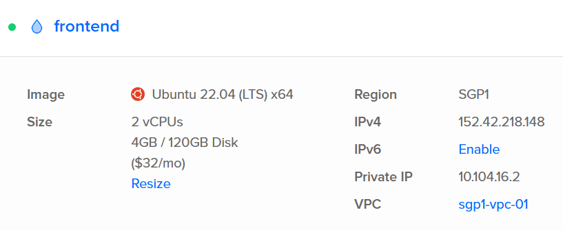
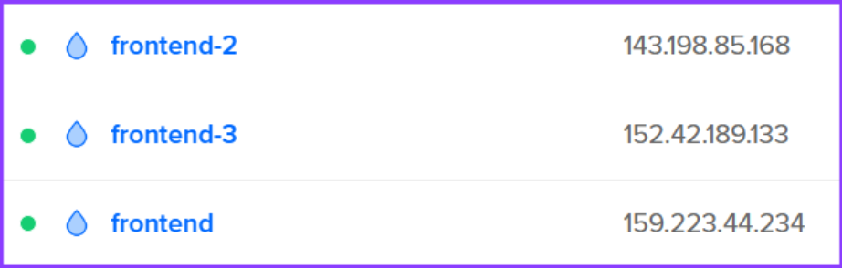
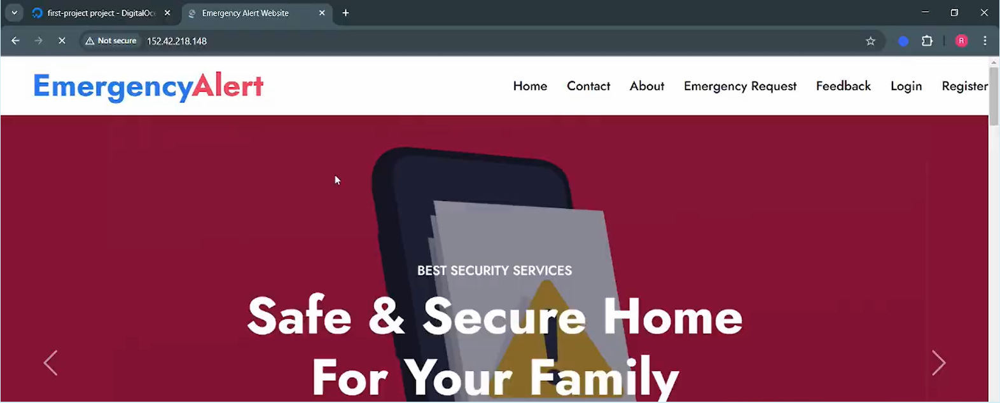

Emergency Alert System
Overview
Developed a cloud-hosted Emergency Alert System to provide high-priority notifications during critical incidents. Designed for high availability, scalability, and resilience, the system integrates frontend, backend, and API components for seamless and reliable delivery. Role: Frontend Developer & Cloud Hosting Manager.


Approach & Methods
- Cloud deployment: Hosted on cloud infrastructure to ensure 24/7 availability.
- Horizontal & Vertical scaling: Added servers for load distribution and upgraded compute resources to improve throughput without downtime.
- Load balancing: Evenly distributed requests to improve response time and reliability.
- Optimized storage: Efficient database schema and redundancy for fast alert delivery and safe data replication.
- Security: Hardened firewalls and traffic monitoring to prevent intrusion.
- Backup & recovery: Snapshot-based backups for rapid restoration during incident drills.
Features
- Role-based access: Authors, reviewers, and broadcasters with clear approval workflows.
- Multi-server resilience: Prevents single points of failure during peak load.
- Fast queries: Optimized backend for minimal alert latency.
- Secure delivery: End-to-end encryption for sensitive notifications.


Results & Impact
- Reliability: Consistent uptime and verified failover readiness.
- Performance: Reduced alert delivery time via balanced traffic and query optimization.
- Scalability: Handles spikes in usage during emergencies without performance loss.
- Preparedness: Snapshot restores validated fast recovery in disaster simulations.